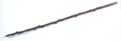
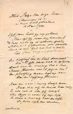
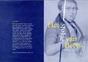
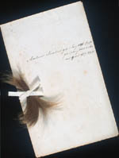
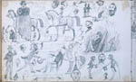

Beets 1903 - 2003
Tentoonstelling van 13 maart tot 11 mei 2003 in de Universiteitsbibliotheek
Samenstelling: C.J. Stiekema en A.Th. Bouwman
Tentoongestelde stukken
Het huiselijk leven vergde ook de nodige aandacht van Nicolaas Beets; hij had immers vijftien kinderen. De dood spaarde zijn gezin niet: tussen 1850 en 1878 heeft hij zijn eerste echtgenote, vier zonen en twee dochters ten grave moeten dragen; telkens weer een groot verdriet. Maar toch ook: “lijden is dienstbaar aan eeuwig heil”, zoals hij verkondigde in de eerste vroegpreek na de dood van zijn geliefde Aleide (1856).
|  | 8.1. Wandelstok, vermoedelijk van de oudste zoon Marten. In 1857 stierf hij op zestienjarige leeftijd aan de tyfus. Sinds 1895 (hij was inmiddels hoogbejaard) gebruikte Beets het stokje zelf, tot het brak. [LTK BEETS B 27] |
 |
8.2. ‘Het stokje van mijn zoon’, gepubliceerd in Dennenaalden (Leiden: A.W. Sijthoff, [1900]). Beets was zeer vertrouwd met het werk van onze grote zeventiende-eeuwse dichters. Literaire invloed van Vondels gedicht ‘Het stockske van Joan van Oldenbarnevelt’ lijkt dan ook zeer waarschijnlijk. [1003 B 9] |
|  | 8.3. Het breken van de stok inspireerde Beets tot een (in portefeuille gebleven) dichterlijk vervolg over eigen breken en dood (1900). De beide stokgedichten zijn in druk gegeven en verspreid ter gelegenheid van Beets’ honderdste sterfdag en de boekenweek 2003. [LTK BEETS D 13] |
|  | |
|  | 8.4. Haarlokje van Marten. Van ieder kind bewaarde Beets zo’n lokje, van de meisjes soms zelfs een hele paardenstaart. [LTK BEETS G 24] |
|  | 8.5. Schetsen uit een album van Marten, gekregen op 7 december 1851. Net als vele kinderen uit het gezin tekende en/of dichtte hij niet onverdienstelijk. [LTK BEETS G 24] |
| vorige pagina | volgende pagina |